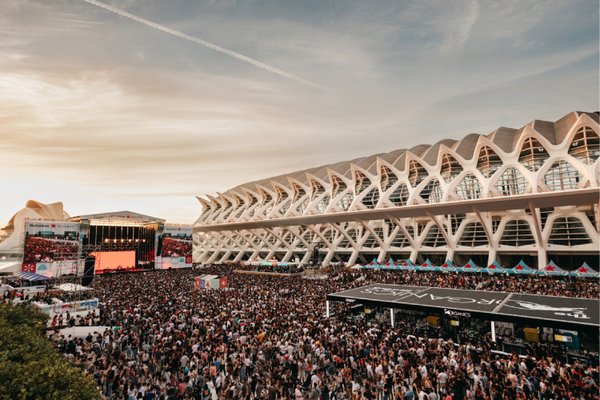

Cultural Festivals
Immerse yourself in our world-renowned celebrations of art, gunpowder, and history. We host the most vibrant and passionate festivals in all of Europe.
Las Fallas Festival
Las Fallas is Spain's most spectacular fire festival, celebrated between March 15-19 each year. In Valencia, giant wooden statues (called fallas) are constructed throughout the city, often reaching heights of up to 15 meters.
Thousands of locals and tourists gather to witness these magnificent artworks being ceremonially burned at midnight on March 18th, creating a breathtaking display of fire and light that illuminates the night sky. The festival also features vibrant parades, traditional dress competitions, street parties, and the iconic flower offering ceremony.
Participants dress in traditional fallera costumes with elaborate decorations. The festival celebrates hope, renewal, and the arrival of spring. It's an unmissable experience for anyone visiting Valencia during this season.
La Tomatina Festival

La Tomatina is the world's largest food fight festival held in Buñol, a town just outside Valencia. Every year on the last Wednesday of August, over 150,000 kilos of ripe tomatoes are distributed to participants of all ages.
In just one hour, the entire town becomes a living tomato battlefield. Streets are stained red, and participants from around the world come together to throw tomatoes, laugh, and create an unforgettable experience. The event originated from a spontaneous tomato fight in 1945 and has grown into an international sensation.
Safety precautions are taken seriously, and the town is thoroughly cleaned afterward. The festival celebrates food, joy, and international friendship. Wearing white clothes is recommended—they're guaranteed to turn red! It's a unique and electrifying celebration unlike any other.